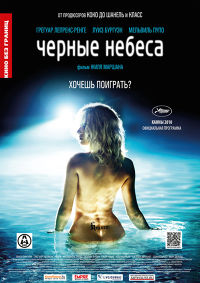

Киноман
Кино-мир фильмов

Название: Черные небеса
Возрастной рейтинг: 18+
Страна: Франция, Бельгия
Год: 2010
Жанр: драма
Режиссёры: Кристофер Смит
Актёры: Шон Бин, Эдди Редмейн, Кэрис Ван Хутен, Дэвид Уорнер,
Кимберли Никсон, Тим МакИннерни, Энди Нимэн, Джон Линч,
Джонни Хэррис, Дэвид Мастерсон
Лето, юг Франции, каникулы. Счастливчик Гаспар в отсутствие родителей
наслаждается обществом друзей и своей девушки Марион. Но в то же время
он знакомится с виртуальным миром игры «Black Hole»…